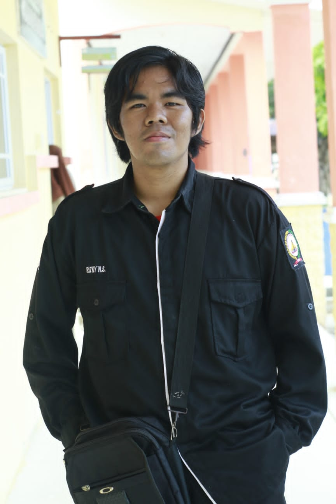

Lindungi Tunas Bangsa dari Kekerasan
Anak ialah suatu anugerah dari Tuhan yang dimana harus dirawat dengan baik, penuh kasih sayang dan dididik dengan sebaik mungkin. Nasib masa depan bangsa juga akan bergantung pada perkembangan mereka. Mereka tidak hanya dalam proses menggapai cita-cita, akan tetapi mereka juga harapan dan generasi penerus bangsa ini untuk kedepannya. Realita yang dilihat saat ini, banyak kasus mengenai kekerasan yang dilakukan oleh orang dewasa kepada anak. Tindakan yang dilakukan itu disebut child abuse. Child abuse adalah suatu tindakan kekerasan fisik, psikis, seksualitas, dan ekonomi hal itu dilakukan oleh orang dewasa terhadap anak yang seharusnya dijaga keamanan dan kesejahteraannya. Bisa diartikan pula hal itu adalah suatu ketidak pahaman orang tua mengenai perkembangan anak. Sering kita lihat orang tua melakukan hukuman fisik dengan harapan anaknya tidak mengulangi kesalahan yang sama. Dalam Pasal 76E Undang-Undang 35 Tahun 2014 mengatakan setiap orang dilarang melakukan kekerasan atau ancaman kekerasan, memaksa, melakukan tipu muslihat, melakukan serangkaian kebohongan, atau membujuk anak untuk melakukan atau membiarkan dilakukan perbuatan cabul. Hukuman yang berlaku untuk si pelaku ialah pidana penjara paling singkat 5 tahun dan paling lama 15 tahun, dan denda paling banyak Rp5.000.000.000. Lingkungan pendidikan formal menjadi tempat kejadian kekerasan terhadap anak yang kerap terjadi. Sangat memprihatinkan guru yang dianggap orang tua anak di sekolah malah menjadi predator anak di sekolah. Seharusnya lingkungan pendidikan formal menjadi tempat mereka mempersiapkan diri untuk menjadi penerus bangsa ini, Sayangnya jenis layanan yang diterima korban hanya sebatas pengaduan. Pemerintah sangat lambat dalam bergerak melakukan penegakan hukum. Pada Provinsi Kepulauan Riau terdapat kasus kekerasan terhadap anak pada sekitaran bulan Januari tahun 2022 berjumlah 183 korban. Bahkan pada Kabupaten Karimun di tahun 2020 sebanyak 43 kasus kekerasan, dan tahun 2021 tercatat 48 kasus kekerasan terhadap anak. Bisa kita simpulkan pada tahun 2020 hingga 2021 mengalami peningkatan. Pada tahun 2022 bulan Juni terdata 26 kasus. Kecamatan penyumbang terbesar persoalan kekerasan terhadap anak yaitu Kecamatan Karimun, Kecamatan Tebing dan Kecamatan Kundur. Tujuh puluh tujuh Indonesia telah merdeka dan sekarang pada bulan Agustus kita semua merasakan semaraknya dirgahayu Republik Indonesia, namun masih banyak kemerdekaan yang belum terealisasikan. Kemerdekaan yang kita peringati hanyalah merdeka dari penjajahan para kolonial. Salah satu yang belum tercapainya kemerdekaan yaitu perlindungan anak. Sudah tujuh puluh tujuh tahun umur negara tetapi ketentraman mereka belum sepenuhnya terwujud. Seharusnya kemerdekaan sejati dimulai dari hal kecil yaitu melindungi tunas bangsa dari segala bentuk kekerasan untuk generasi ke depan. Menurut penulis, salah satu cara yang bisa mengatasi hal ini ialah dengan langkah memperkenalkan pendidikan parenting kepada para orang tua. Pendidikan parenting bertujuan meningkatkan pengetahuan dan keterampilan dan kesadaran orang tua bahwa mengasuh anak juga memerlukan ilmu dan pengetahuan. Kepada anak kita bisa memperkenalkan suatu edukasi tentang sex education yang dimana kekerasan terhadap anak terdapat suatu kekerasan dalam bentuk pelecehan seksual. Dalam Sex education memberikan suatu edukasi mengenai pengetahuan bagian tubuh dan fungsinya, menceritakan masa pubertas dan perubahan yang terjadi pada organ tubuh, mengajarkan anak mengenai bagaimana cara memperlakukan teman lawan jenis, pemahaman tentang kekerasan dan pelecehan seksual. Penulis berharap besar kepada pemerintah dan terkhususnya Pemerintah Daerah untuk mengatasi masalah tersebut. Kita tekan agar tidak terjadi peningkatan kembali. Bahkan kita usahakan kasus ini bumi hanguskan di daerah kita. Tegakkan hukum yang bersangkutan, jalani sebagaimana mestinya dan jangan hanya dijadikan sebagai ikon. Khusus kekerasan dalam pelecehan seksual sekiranya perlu berikan hukum pidana dan lakukan tindakan hukum kebiri. Tidak hanya pemerintah saja, bahkan keluarga, kita sebagai masyarakat, dan tenaga pendidik juga bersinergi untuk melindungi tunas bangsa dari kekerasan anak.
Penulis: Rizky Nurul Suhendra